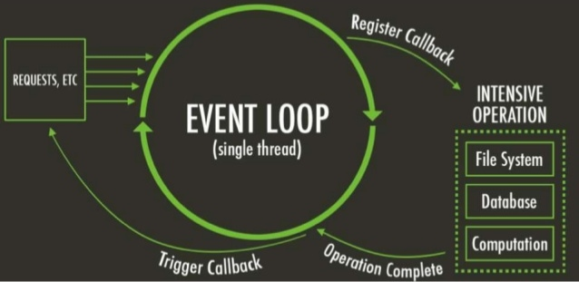

Node.js para Padawans

Gabriel
Gonçalves
Ribeiro
Gonçalves
Ribeiro
No último episódio ...
É uma plataforma construída em cima do motor JavaScript do Google Chrome (V8 Engine)Foi criado por Ryan Dahl em 2009

assim como JavaEE para Java
e como .Net para C#

Apenas uma thread para cada conexão, que dispara um evento executado dentro da engine de processos do Node

Começando com Node
Baixar o Node em sua versão LTS (de preferêcia) clicando aqui
Após instalar, abrir a linha de comando e digitar node --version ou node -v, se tudo der certo, aparecerá a versão atual do node!
Agora basta digitar node nomeDoArquivo.js na linha de comando, com o nome do arquivo que você deseja executar e a mágica acontecerá!
Após instalar, abrir a linha de comando e digitar node --version ou node -v, se tudo der certo, aparecerá a versão atual do node!
Agora basta digitar node nomeDoArquivo.js na linha de comando, com o nome do arquivo que você deseja executar e a mágica acontecerá!
+
9 linhas de código
são o suficiente para começar a construir um servidor em Node

scripts - ao digitar no console npm run [nome do script] ele executa o trecho de código de
atribuição!
Neste caso, ao digitar npm start o console automáticamente irá executar o "node index.js" para iniciar a
aplicação
dependencies - ao digitar no console npm install, todos os módulos e sub-módulos serão instalados
Na linha 1, estamos importando o componente express das nossas dependencias (node_modules)
Na linha 3, criamos uma instancia do express!
Na linha 5 à 7, criamos uma rota do tipo get, com a rota /, que utilizará o método send, para enviar um json ao
cliente
Na linha 9 iniciamos o servidor na porta 3000
Exemplo de Gateway
Código FonteRisingStack